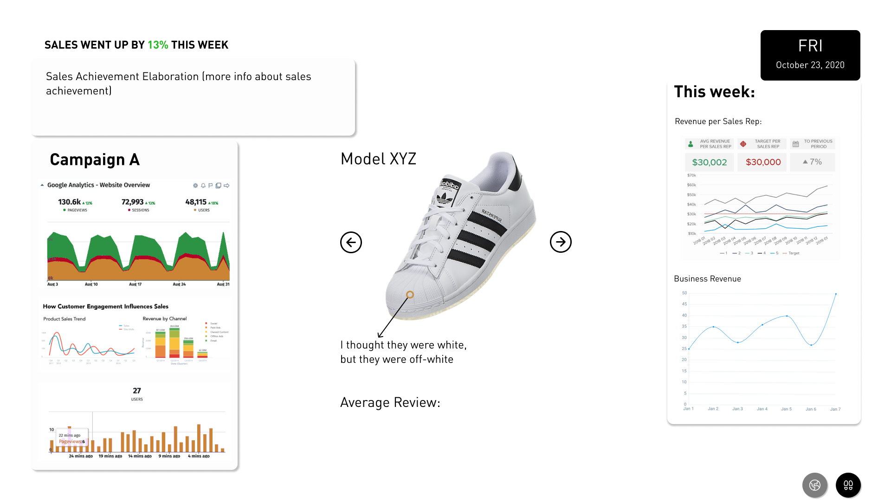

Adidas Fashion Dashboard
Interaction Design Studio I
Oct - Nov. 2020

Team
Mansi Agarwal, Lea Emerlyn, Yunmin Oh & April Wu
Focus
Understand how to collect and identify useful information for the target audience; effectively design visuals to translate and communicate the key pieces of information for viewers.
Tools
Figma, Procreate, Photoshop, Jamboard
Strategies
User research, qualitative analysis, data visualization, and UI design
Overview
With the growing amount of data being collected and used within today's businesses, it can be challenging and time-consuming
for teams to differentiate and classify information as resources and noise.
Within this project, we aim to better this process
through data visualization: we organized and combined the most relevant data and displayed their information on a fashion dashboard
that can allow its viewers (e.g. designers, directors) to assess their current directions and make any necessary adjustments accordingly.
Personas

Research
Affinity Diagram:
We conducted a qualitative analysis on sneaker reviews from Amazon customers:
- Focused on sales data: why did the shoes sell, what were the complaints, why were they returned/exchanged?
- Identified reviews can be largely classified into (1) feedback on the physical shoes (positive/negative comments and supplier issues) and (2) emotional components (purchase motives and value for money).
User Flow
(pre-dashboard)
From the current model, it can be stated that the design and production process is sequential and linear, where the main point of critique/feedback is from customer reviews. Our goal was to make this process more iterative and add more areas to collect and implement updated data, giving more opportunities to improve upon each design.
User Flow
(post-dashboard)
We brainstormed a future state, where the design and production process can be more iterative and account for societal factors (e.g. demographics, trends, culture) –– an area that can provide insightful data and influence towards business decisions and user experiences.
Paper Prototypes
Given that the dashboard is targeted to designers and marketers, we focused on the global aspect of data: provide
insight into local culture to inspire effective designs and marketing strategies.
We found ourselves thinking in the same direction, thinking of widgets such as a map/globe to explore different
fashion hubs, a social media widget to identify trends, and sales summaries that indicate fashion sneakers'
relationship with the current trends. The red circles represent elements we picked to put in our dashboard.
Low Fidelity Designs
We envisioned a dynamic dashboard, where the data presented changes according to the day of the week and matches the workflow of Adidas's Portland office: Monday through Thursday are focused on design and development, and Friday is focused on summary and next steps.
- Monday - Thursday dashboard: display includes widgets that provide motivation and inspiration to designers. We kept the globe at the center and the chosen location disctates the content displayed on the social media, current trends and sustainability widgets.
- Friday dashboard: display includes widgets that provide sales and marketing impact feedback to marketers. We placed the shoe model with customer reviews in the middle and sales achievement, current campaign, and data including total sales and revenues widgets on the side. These screens could be switched to by pressing the two buttons in the bottom on the screen.
Mid-fidelity Design
Old version:
Concerns with old design:
- Presenting information the intended users might already have
- We were informing rather than influencing
- Needed to reroute and present that data in a way that would lead to data-driven design and marketing decisions
New version:
Changes:
- Used widgets to show both statistics and images of the current trends to inspire new ideas in designers and marketers
- Focused our motion element on updating the data as a reflection of the outside world: information displayed in widgets updated with change in location
High Fidelity Design and Features
Globe
Comments:
- For motion, we implemented a globe that is in spinning motion by default and invites users to select a destination on the globe
- However, we noticed that this design can cause “traffic”: individuals can block the board while interacting with the globe, which can also affect others who are trying to view the dashboard
Changes:
- We chose to remove the globe from the dashboard itself and have it as the physical control (separated but complementing the dashboard), which can allow users to change the display, but not affect others in the process of doing so.
Social Media
Comments:
- We originally thought of our dashboard to be similar to a touchscreen tablet and implemented the toggle feature for the social media widget, allowing it to change between Instagram and TikTok, and a drop menu that allowed the users to choose tags and filter the displayed results.
Changes:
- After realizing this design invites too much interaction for an ambient display, we changed the social media widget to have auto-motion and re-designed the designer favorites into digital bulletin board for different designers to pin their favorite pieces, outfits, and inspirations.
Shoe Details

Comments:
- The shoes statistic on the left is intended to change in 45-second intervals, with the next shoe entering the screen from the right, which gives the viewer enough time to find the absorb the shoe's summary
Changes:
- We realized that this design did not give viewers enough feed-forward for which shoes will be presented to the to the viewers next, so we added a list naming the shoes that were ranked and giving the viewer a mental image of the order.
Loading Screen
Comments:
- We initially planned for a loading page to simulate a sense of travel when the user changes the location.
Changes:
- We realized this feature may add more confusion than spark interest in the users. Additionally, it can also cause unnecessary waiting time for screens to change.
Final Design

Our final design has a strong global element to it, where the control changes between locations and our widgets change accordingly: users can get a peak into each region’s fashion favorites
We also incorporated five key widgets within the dashboard:
- Current trends: displays statistical information on how popular the certain trends are based on how often they are mentioned in media
- Social media: shows Instagram and TikTok posts according to the top trends and changes when there is an update in current trends
- Designer favorites: displays designers’ digital bulletin boards, which changes on a weekly basis and changes along with location
- Influential campaigns: shows information about past and current collaborations with celebrities and influencers
- Potential ambassadors: shows celebrities and influencers that would be fit for future collaborations